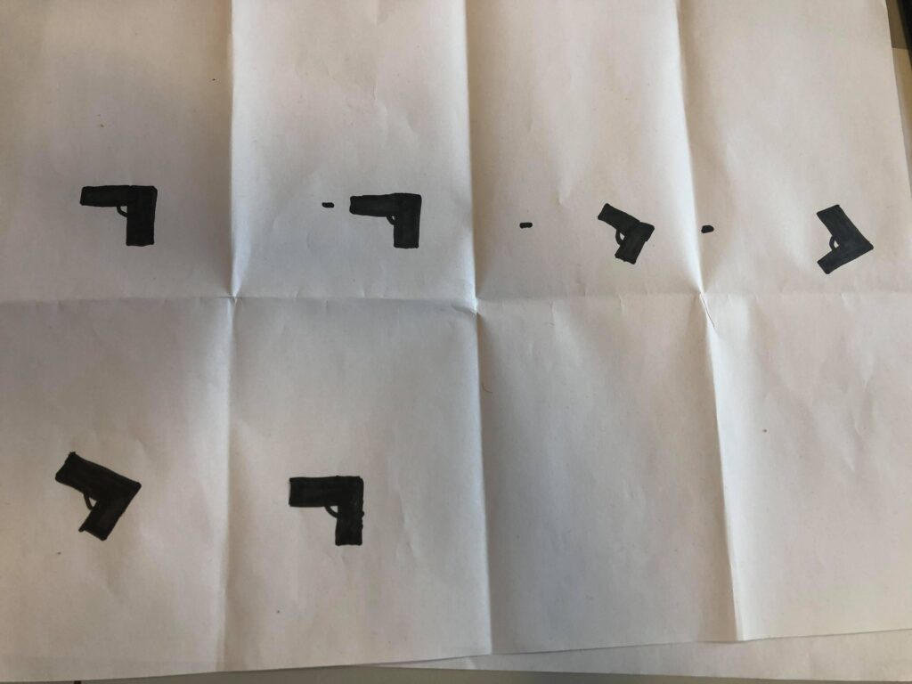

Christoffer
Grønlund
Svendsen
HTML og CSS animation
Opgave
Opgaven var at lave et blog post på sin portfolio, hvor man beskriver processen ved en animation hvor der er anvendt HTML og CSS, samt Adobe illustrator til at fuldføre opgaven. Opgaven skal indholde et storyboard, beskrivelse af processen, fra Spritesheet til fungerende animation, en beskrivelse af koden og et færdigt resultat.
Værktøjer
- - Atom
- - Photoshop
- - illustrator
Processen
I processen startede jeg med at skrive et par idéer ned og da jeg fandt min idé, begyndte jeg at tegne forskellige måder idéen kunne se ud på. Idéen var en animation af en pistol der skyder i uendelighed. Da idéen var på plads, blev der lavet et storyboard til den og den illustration kan ses ovenfor.
Efter storyboardet blev lavet, var der en bund for hvordan animationen skulle se ud, derfor gik jeg i gang med at lave forskellige versioner af en pistol, her er der anvendt Adobe illustrator. Med Adobe Illustrator er det muligt at sætte det tegnet værk op på en række og ændre lidt i det, så det ligner at pistolen skyder og der tilmed kommer et patron hylster ud. Billedet er 500x3000 pixels og de forskellige illustrationer er delt op, så der er lige langt mellem hinanden og i samme højde, hvilket er vigtigt så der ikke kommer udsving den animation der skal laves. Adobe Illustrator illustrationen kan ses nedenfor.
Da de forudsætninger for at man kan lave en Animation i Atom med HTML5 og CSS var færdige, så skulle der kodes. Koden kan ses nedenfor, og er forholdsvis simpel. Der skal laves et div-tag i HTML filen, div-tagget skal have en class, så når man ovre og arbejde i CSS filen, så ved CSS helt konkret hvilken div der er tale om. I CSS lagde jeg billedet ind som jeg lavede i Adobe Illustrator, hvorefter jeg gav billedet en bredde og en højde, samt hvor hurtigt den skal spille og hvor mange steps der er. Efter div-tagget havde fået det rette udseende, så kunne der laves en animation. Til animationen er der anvendt @keyframe-tagget. Koden kan ses i Illustrationen nedenfor.

Efter en del kamp med koden, så lykkedes det til sidst og det færdiggjorte resultat kan ses her.
Reflektion
Denne opgave havde en OK sværhedsgrad. Med hjælp fra både undervisere og medstuderende så kom jeg i mål. Jeg har ikke den store erfaring eller interesse i Adobe Illustrator og det at lave en Animation, så derfor var opgaven, noget hvor jeg bare skulle lære programmerne så godt at kende som overhovedet muligt, på den tid vi fik. Derfor var det færdige resultat ikke så vigtigt, men det var vigtigt at opgaven blev løst og at jeg var tilfreds. Animationen jeg fik lavet, var jeg tilfreds med og jeg fik lært nogle forskellige værktøjer i forkellige programmer, som for eksempel Adobe illustrator, at kende som jeg kan bruge på andre ting i fremtiden.